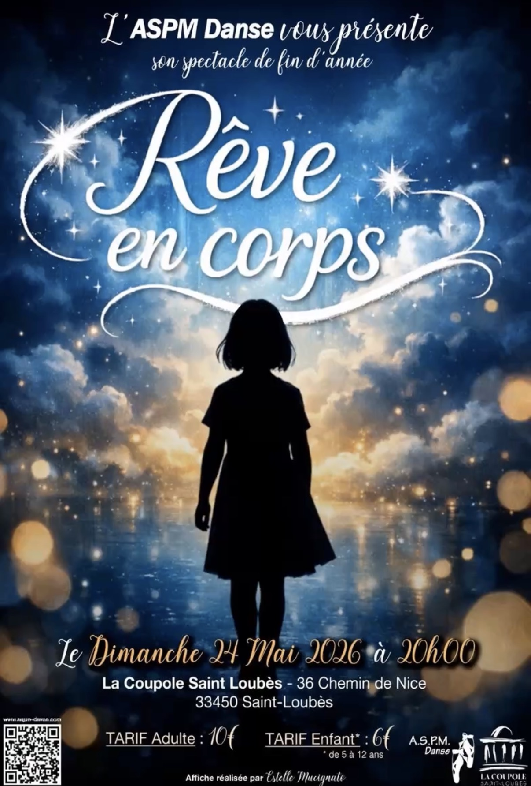

Un voyage dans le monde des émotions à travers la danse

Lors du premier gala auquel j'ai participé, j'ai ressenti un manque de narration. C'est pourquoi j'ai proposé, cette année, de construire une véritable histoire — pour mieux capter l'attention du public et apporter davantage de profondeur au spectacle.
Une jeune fille, Emma, s'endort — en lien avec le thème du rêve — et se retrouve plongée dans un univers onirique. Au fil de son voyage, elle rencontre différents personnages. À chaque nouvelle rencontre, une personne rejoint Emma, formant progressivement un groupe. Ces rencontres vont lui permettre de prendre confiance en elle et de ne plus se sentir seule dans cette aventure.
« Un rêve se vit, se partage, se danse… et se rêve en corps. »
Un jeu de mots en lien avec le titre du spectacle.
⚠️ Note : Je ne sais pas où le placer, soit au tout début, soit après la scène de Orianne. À voir avec vous…
Emma — Voix intérieure
Depuis toute petite, j'ai rêvé d'un monde où les mots n'existaient pas. Un monde où le corps parle à la place du cœur. Chaque nuit, dans mes songes, je cours à travers des couleurs que je n'ai jamais vues le jour. Des sons que je n'entends qu'à moitié éveillée. Des gens qui dansent comme s'ils n'avaient jamais eu peur.
Cette nuit encore… je rêve.
Et dans ce rêve, il y a une scène. Et sur cette scène, il y a moi. Mais je ne suis pas seule.
Ce soir, nous avons tous dansé. Ensemble.
Merci d'avoir rêvé avec nous.